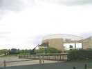
D'abord, un petit détour pour voir Utah Beach et son musée, site plein d'émotion respectueuse...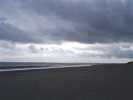
La plage elle-même est bien sombre en ce jour, pas seulement moralement. Par ailleurs, on ne comprend pas bien que les Allemands aient peu envisagé un débarquement ici, et ça ne s'est comparativement pas trop mal passé...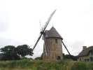
Puis direction le moulin de Fierville, LE moulin du Cotentin. Il a été rénové et tourne, il moud du sarrasin en ce moment, pour les galettes, évidemment (et avec le son, on fait... des oreillers).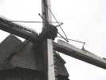
Les toiles des ailes, compliquées à régler (il faut arrêter le moulin, amener chaque aile en bas et la modifier...), ont été remplacées par un mécanisme ingénieux de planches superposées moins jolies, mais qui permettent de changer la surface active de l'intérieur, sans arrêter le moulin !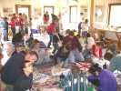
Dans les locaux touristiques, on monte un atelier de cerfs-volants pour enfants. Les bâches pour la peinture sont étalées, les toiles (plastiques) coupées à mesure, les bambous et les queues collés, la bride montée, la ligne raccordée, 50 dans la journée quand même, plus de 200 dans le week-end...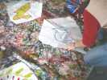
Il y a des artistes plus ou moins doués, mais le dauphin n'est pas mal !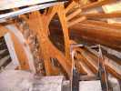
Au soir, l'atelier se calme, on en profite pour une petite visite du moulin. La splendide charpente supporte le toit, mais aussi l'axe et les ailes, et l'ensemble peut tourner sur le haut des murs. Réalisé par des Compagnons du Devoir spécialistes des moulins, le total fait... 12 t ! Le palier principal est... en marbre bien graissé !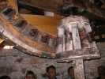
La roue meneuse entraîne via cet engrenage (en bois aussi !) l'axe vertical carré de la meule supérieure. Cet axe entraîne aussi plus bas un blutoir qui tamise le son et les différentes finesses de farine, et un treuil qui permet de monter les sacs tout en haut.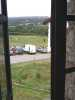
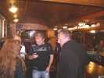
Au soir, on descend à Carteret, et après dîner au centre, on mérite bien un petit pot.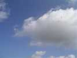
Le lendemain, l'atelier et les cerfs-volants repartent de plus belle sur la plage de Barneville...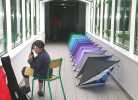
Michel n'a pas trop dormi mais son super cerf-volant poutre de 12 m de long, le Pellylong a bien avancé. On ne le verra quand même pas voler, il reste toutes les brides à faire et c'est pas rien...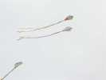
Les enfants s'amusent avec leurs CVs tout neufs. Comme toujours, ils ont envie de voler à côté de leurs copains, ça ne se passe pas toujours bien !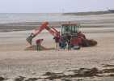
Sur la plage, on creuse des trous pour les ancrages : pneu + chaîne + bidon pour le retrouver après la marée... Malheureusement, les bidons sont mal attachés et on les retrouvera presque tous demain en haut de la plage ! Ca manquera d'ancrages, après !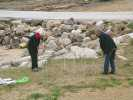
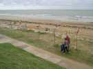
Joël et Chantal dressent leurs moulins et ensuite Joël montera des cerfs-volants.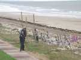
Patrick et Patricia plantent leurs masques et les transparents à mots, Bruno dresse des flûtes en bambou...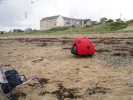
J'ai monté mon Albatros2 après avoir réparé sommairement la déchirure d'une aile (ficelle et Blenderm...), le vent m'ayant pris en traître au sol en la retournant...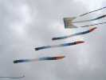
Michel, avec l'aide de son équipe, montera bien sûr plein de cerfs-volants dont les grands flow-forms à ses armes avec les splendides queues dites "en melons"...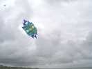
Xavier Cormerais a réalisé un roto très beau et original, dont il peut même régler l'angle... Il tourne lentement et majestueusement, même dans ce vent costaud (35 km/h environ)...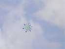
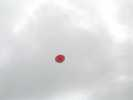
Jacqueline lance son petit cerf-volant rouge à effet Coanda, qui vole en tournant sur lui-même... Je ne sais pas qui est le génial créateur qui a appliqué l'idée au cerf-volant pour cette machine simple : un axe et 2 ellipses perpendiculaires en jonc et toile.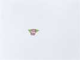
Un Madiot-CVCF survolera aussi les débats toute la journée...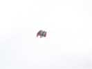
Christian Bécot a mis en l'air son flow-form "becotized", comme on dit sur le net même en Allemagne, modifié pour assurer la stabilité indispensable à un usage photographique !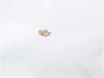
Le vent baissant, Christian a aussi monté son Crico, une sorte de Pellibox à surface augmentée...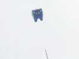
Et Claude fait voler son flow-form celte, mais sans ses énormes queues...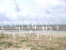
Au sol, le Jardin de Thérèse est fini. Ce sont des sternes, très fines et qui bougent constamment, certaines tournent même sur elles-mêmes...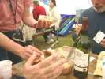
Déjeuner dans le barnum (tant mieux, il pleut juste quand on mange). Michel améliore l'ordinaire avec des pâtés maison succulents !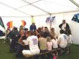
On mange à table, copieusement, entre amis, et à l'abri, que demander de plus ?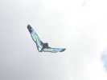
Claude a aussi créé et mis en l'air un oiseau de son cru, un peu inspiré de la structure Albatros, mais sur laquelle Claude a largement extrapolé...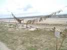
Michel Darnis n'a pas amené ses cacophones, mais des farandoles de pittoresques bois d'épaves ramassés sur les grèves...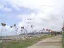
Ca y est, les masques de CarnetDeVol sont montés, comme les transparents-mots, en amont des moulins de Joël....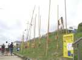
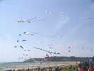
Pas énormément de cervolistes, avec l'option prise par Michel, mais autant de cerfs-volants que sur un festival plus large !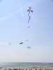
Sous ce flow-form, une belle brochette de queues et d'insectes divers !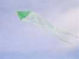
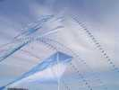
Fin d'après-midi, on commence à songer au vol de nuit et la marée monte aussi, alors on range pas mal de CVs, mais Michel sort ses arches par-dessus la descente de plage... Des éléments unis, sauf la première, qu'il a peinte à la main...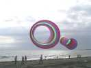
La grande pieuvre a volé un moment, et trois Circoflex longs viennent maintenant faire du volume au bord de l'eau qui gagne du terrain petit à petit !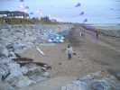
Le spectacle nocturne se met en place pour un départ au sol, et de plus en plus de CVs en l'air...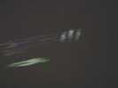
Pyrodelta vert, Pellibox à queues, mon Albatros blanc, Michel mettra même courageusement son très grand delta en l'air, malgré le vent qui monte doucement mais sûrement. Mais il faudra venir l'aider à rester avec nous... et se mettre à quatre pour descendre la bête !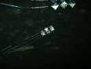
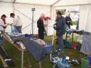
Après une bonne nuit, retour au barnum, il faut commencer par tout remettre en ordre, enrouler les queues proprement sur leurs plaquettes, on a rangé dans le noir et au plus vite hier soir...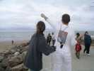
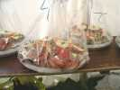
Déjeuner, Michel ne se moque pas de nous, il était prévu des bulots, mais on va pas pleurer les araignées, les tourteaux et les huîtres...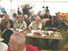
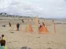
CarnetDeVol (en un mot, pour le site .org) a aussi dressé sur la plage un ensemble d'étamines d'organza...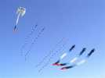
L'équipe du Ciel Pour Cimaise a remonté les flow-forms avec les queues-melons, enrichies d'autres queues cylindriques annelées et très longues...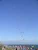
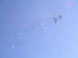
Joël a sorti un des cellulaires que je préfère...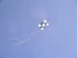
Le Ciel Pour Cimaise a aussi remonté un des Pellibox peints qu'on a vu en vol de nuit, avec trois grandes queues !